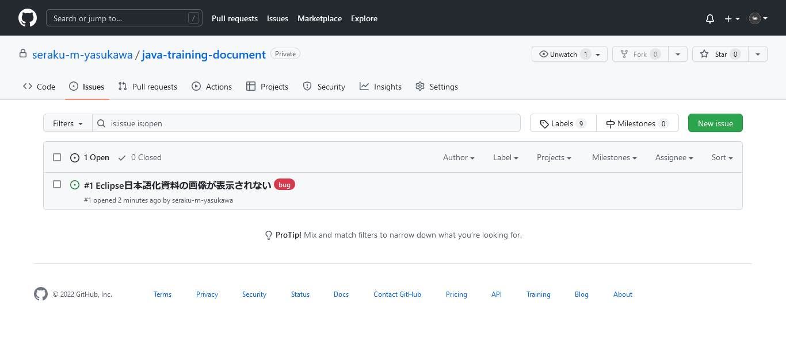
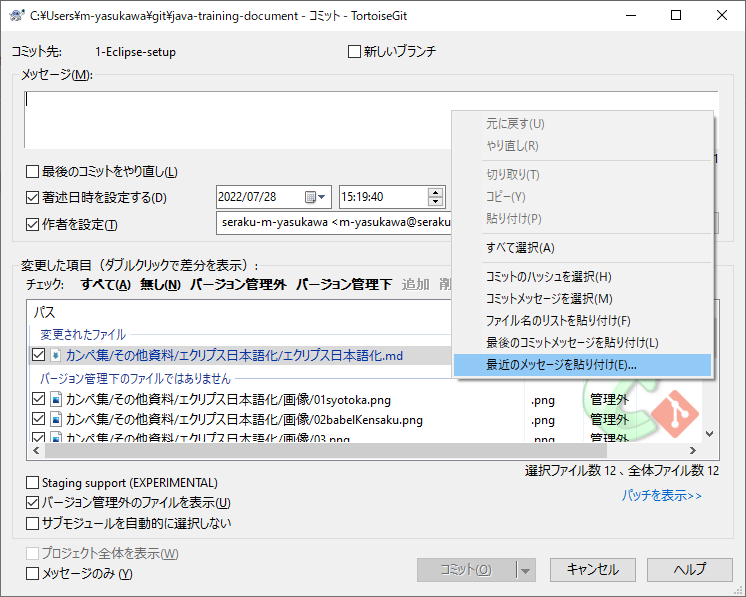
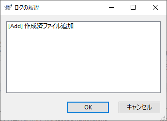
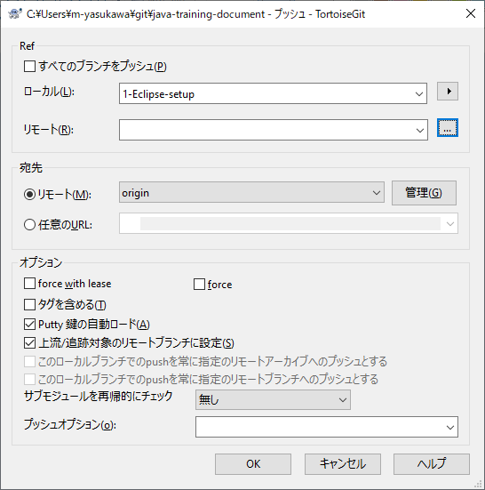
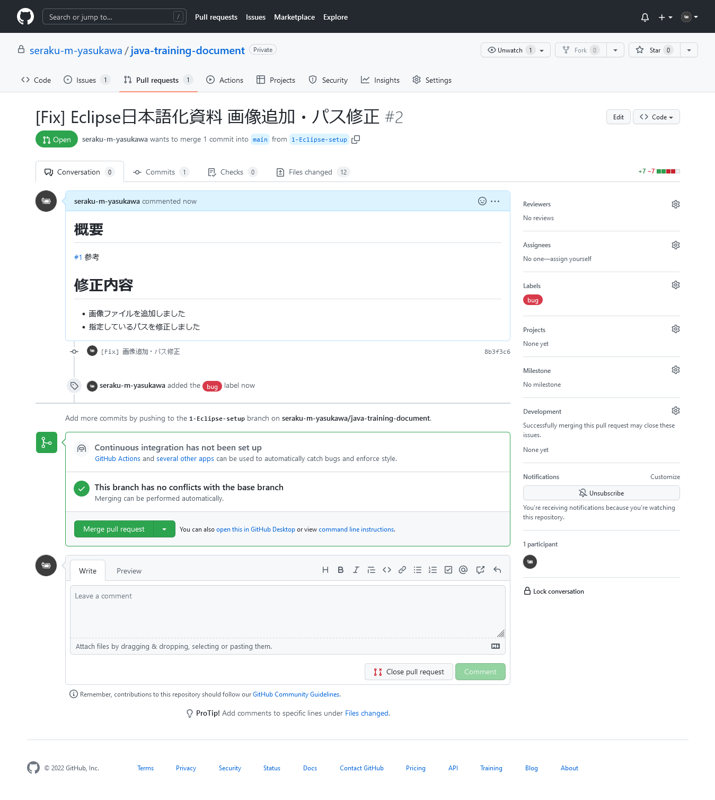
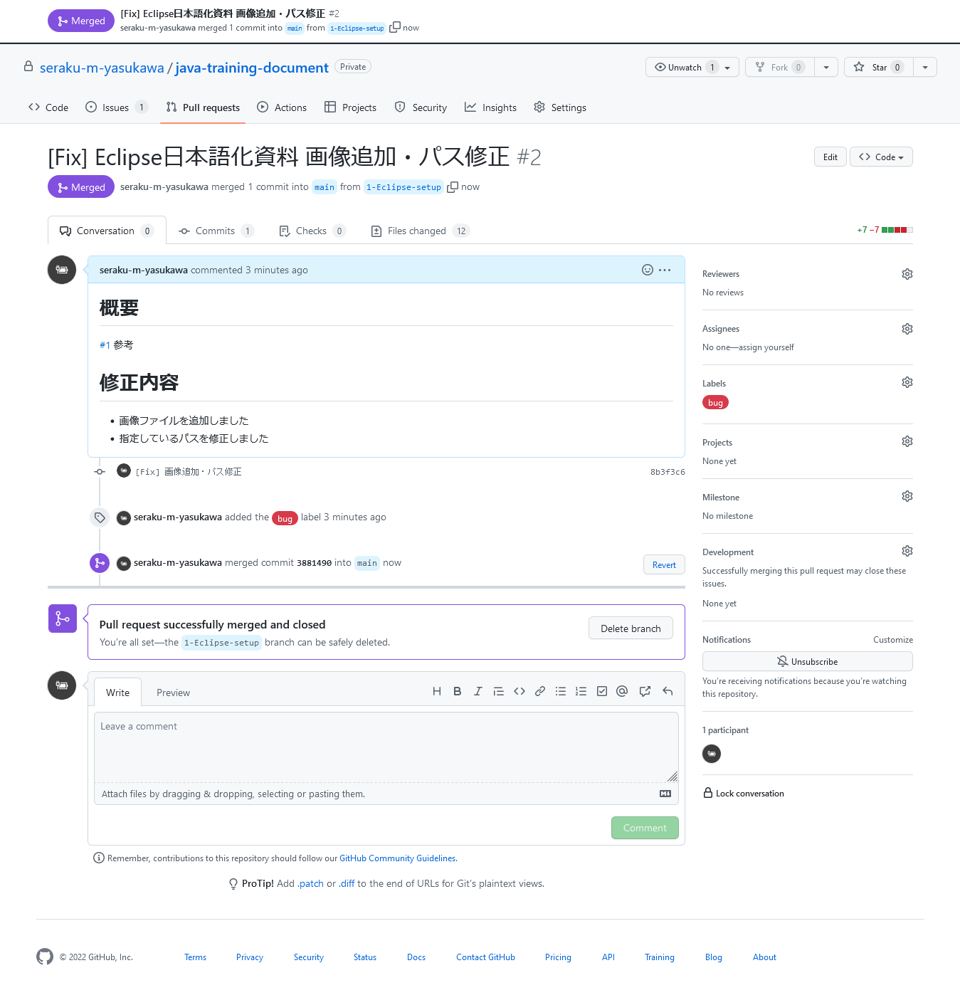
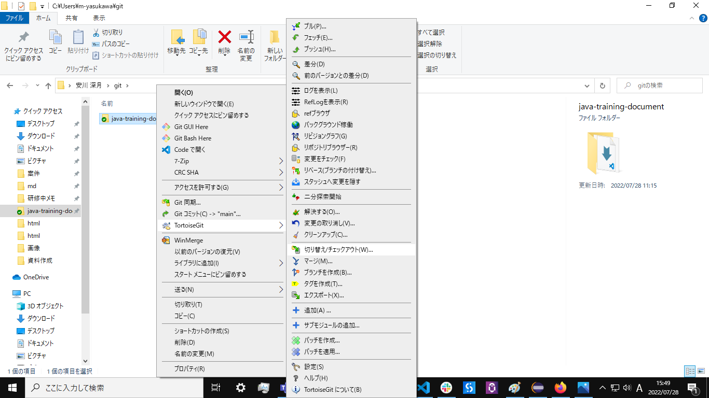
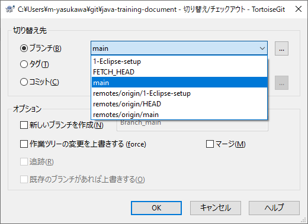
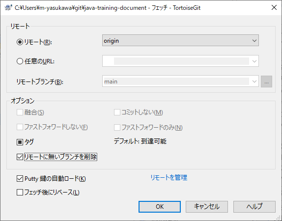

New issueを選択する。
TortoiseGitとgithubの連携を行い、TortoiseGitからコミットする。
プッシュしたので、早速githubでファイルを確認してみる。

すると、貼り付けた画像が正しく表示されていない。
原因は単純で、画像ファイルをリポジトリに追加するのを忘れていたから。
これを修正するために、issueを作成し、ブランチをきって、マージまで行う。
Issueとは、何かしらのタスクや課題のこと。gitを使う場合、Issueによって課題を管理することが多い。
Issueによる課題管理の流れは以下のようになる。
リポジトリ画面から、Issueを開き、右上のNew issueを選択する。
下記のような画面が表示されるので、Issueの内容を書き込む。

Title
Issueのタイトル。概要を書き込む。
誰が見ても一目でわかるように心がける。
Leave a comment
Issueの詳細。md記法。できる限り細かく書く。
例えばバグの修正の場合、
などを書く。
わからないところは「調査中」とか「検討中」とか書いて、あとで追記すればいい。
Assignees
担当者。このIssueのボールを持っている人を設定する。
Labels
Issueのタグ付け。「bug」とかつける。
Millestone
タグ付けその2。「第1次開発」とかつける。
書き込んだ後。

想定される動作は明確なので、いま発生している問題とともに、概要としてまとめて記述した。
1人で開発しているので担当者は未設定、ラベルだけつけておいた。
右下のSubmit new issueを押せば作成される。
作成完了。下記のように表示される。

Issue一覧ではこんな感じ。

せっかくなので新しくブランチを作ってみる。
ローカルリポジトリを右クリックし、TortoiseGit > ブランチを作成(B)...を選択。
下記のような画面が表示されるので、色々と入力する。

名前(N) ブランチ
ブランチの名前。わかりやすい名前にする。
#Issue番号-何々を-どうする
みたいに書いたりするが、現場に合わせること。
オプション 新しいブランチに切り替える(S)
ブランチ作成後、新しいブランチに切り替えるかどうか。
チェックしておくことを推奨。
書き込んだあと。

特に深く考えてはいない。
そのままOKを選択して作成する。
いつもの。

ブランチを切り替えたので、とりあえず修正を行う。

画像を追加し、mdファイル内の画像のパスを修正。
ついでに見出しをちょっと変更した。
コミットする。

コミット画面のメッセージで右クリック、最近のメッセージを貼り付け(E)...で、
最近のコミットメッセージの一覧が表示される。

選択するとメッセージ欄に貼り付けられるので、ちょっと楽できたり、
これまでのメッセージを参考にできる。
今回は特に参考にせず記述した。
コミットしたので、プッシュも行う。

 プッシュが無事終了。
プッシュが無事終了。
しかし、githubのページを開いても、更新されていないはず。
なぜなら、今表示されているのはmainブランチで、先程プッシュしたのは1-Eclipse-setupへだからだ。
そのため、1-Eclipse-setupを表示するように切り替える必要がある。

 切り替えたことで、さきほどプッシュした情報に更新された。
切り替えたことで、さきほどプッシュした情報に更新された。
さっき確認したように、mainブランチに変更が反映されていないので反映させる。
これにはmargeという作業を行う。
TODO:margeの詳細解説
が、ほとんどの現場ではチームで開発を行っており、大抵は誰かにコードレビューをしてもらう必要がある。
そんな時に、プルリクエストを行う。これはマージリクエストとも呼ばれる。
プルリクエストとは、「レビューしてOKだったらマージしてくださいね」という依頼のこと。
これを使うことで、レビュー依頼のタスク化され管理が楽になるし、コードの変更部分が明確になる。
プルリクエストの作成は、githubのリポジトリ画面からPull requestsを開き、右上のNew pull requestsを選択する。


上記のような画面が開かれるので、compareからさっき作成したブランチを選択する。
選択すると、ある程度記載された状態で、プルリクエストの入力画面が表示される。

ここには、
などを記載する。画像はすでに記載済み。
また、#1のようにIssueの番号を記載しておくと、自動的に紐づけてくれる。
プレビューはこんな感じ。

右下のCreate pull requestを選択すればプルリクエストが実行される。
作成されたプルリクエストは、一覧ではこのように表示されている。

プルリクエストのページではこんな感じ。

プルリクエストからmargeを行う。本来は変更点などを確認し、コードレビューを行うが、今回は自分でやっているので割愛。
先程のプルリクエストのページの、Marge pull requestを選択。

マージするとこのようになる。

また、紐づいていたIssueにもその旨が表示される。

ここで、Issueが解決したので、Issueを閉じる必要がある。下のようにコメントを入力し、Close with commentを選択すればよい。
他、マージされたブランチが不要なら削除しておく。
ここでローカルリポジトリをmainブランチに切り替え、コードを確認してみる。

切り替え先ブランチはmainを選択して実行する。

すると、コードが編集前に戻ってしまっている。

これは、ローカルのmainブランチは変更が反映されていないから。
そのため、リモートリポジトリからフェッチしなければならない。
TODO:フェッチ
右クリックして選択。

次のような画面が表示されるので、リモートにないブランチを削除にチェックを入れて実行する。

問題なく成功すればフェッチ完了。これで、ローカルのmainにも変更が反映された。

コードに変更が反映されている。